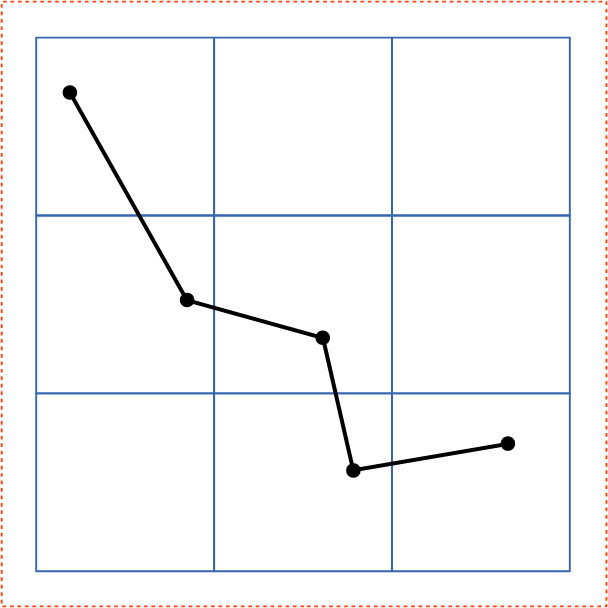
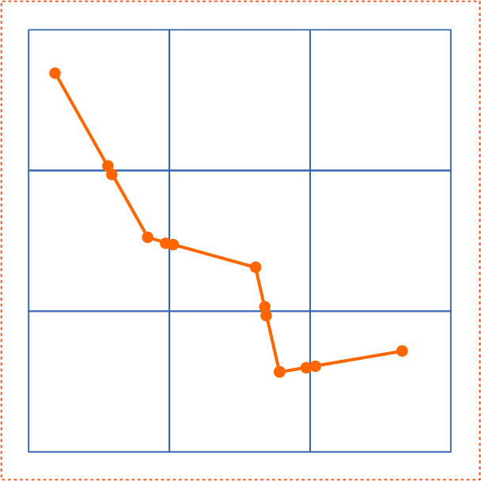

This appendix is normative.
The following are notes about implementation requirements corresponding to various features in the SVG language.
There are various scenarios where an SVG document fragment is technically in error:
A document can go in and out of error over time. For example, document changes from the SVG DOM or from animation can cause a document to become in error and a further change can cause the document to become correct again.
The following error processing shall occur when a document is in error:
Because of situations where a block of scripting changes might cause a given SVG document fragment to go into and out of error, error processing shall occur only at times when document presentation (e.g., rendering to the display device) is updated.
Some numeric attribute and property values have restricted ranges, such as color component values. When out-of-range values are provided, the user agent shall defer any error checking until after presentation time, as composited actions might produce intermediate values which are out-of-range but final values which are within range.
Color values are not in error if they are out-of-range, even if final computations produce an out-of-range color value at presentation time. It is recommended that user agents clamp color values to the nearest color value (possibly determined by simple clipping) which the system can process as late as possible (e.g., presentation time), although it is acceptable for user agents to clamp color values as early as parse time. Thus, implementation dependencies might preclude consistent behavior across different systems when out-of-range color values are used.
Opacity values out-of-range are not in error and should be clamped to the range 0 to 1 at the time which opacity values have to be processed (e.g., at presentation time or when it is necessary to perform intermediate filter effect calculations).
An elliptical arc is a particular path command. As such, it is described by the following parameters in order:
(x1, y1) are the absolute coordinates of the current point on the path, obtained from the last two parameters of the previous path command.
rx and ry are the radii of the ellipse (also known as its semi-major and semi-minor axes).
φ is the angle from the x-axis of the current coordinate system to the x-axis of the ellipse.
fA is the large arc flag, and is 0 if an arc spanning less than or equal to 180 degrees is chosen, or 1 if an arc spanning greater than 180 degrees is chosen.
fS is the sweep flag, and is 0 if the line joining center to arc sweeps through decreasing angles, or 1 if it sweeps through increasing angles.
(x2, y2) are the absolute coordinates of the final point of the arc.
This parameterization of elliptical arcs will be referred to as endpoint parameterization. One of the advantages of endpoint parameterization is that it permits a consistent path syntax in which all path commands end in the coordinates of the new "current point". The following notes give rules and formulas to help implementers deal with endpoint parameterization.
Arbitrary numerical values are permitted for all elliptical arc parameters, but where these values are invalid or out-of-range, an implementation must make sense of them as follows:
If the endpoints (x1, y1) and (x2, y2) are identical, then this is equivalent to omitting the elliptical arc segment entirely.
If rx = 0 or ry = 0 then this arc is treated as a straight line segment (a "lineto") joining the endpoints.
If rx or ry have negative signs, these are dropped; the absolute value is used instead.
If rx, ry and φ are such that there is no solution (basically, the ellipse is not big enough to reach from (x1, y1) to (x2, y2)) then the ellipse is scaled up uniformly until there is exactly one solution (until the ellipse is just big enough).
φ is taken mod 360 degrees.
Any nonzero value for either of the flags fA or fS is taken to mean the value 1.
This forgiving yet consistent treatment of out-of-range values ensures that:
An arbitrary point (x, y) on the elliptical arc can be described by the 2-dimensional matrix equation:
(F.6.3.1)
x = rx*cos(θ)*cos(φ) - ry*sin(θ)*sin(φ) + cx
y = rx*cos(θ)*sin(φ) + ry*sin(θ)*cos(φ) + cy
(cx, cy) are the coordinates of the center of the ellipse.
rx and ry are the radii of the ellipse (also known as its semi-major and semi-minor axes).
φ is the angle from the x-axis of the current coordinate system to the x-axis of the ellipse.
θ is the angle around the arc that the point (x, y) lies at, and ranges from:
If one thinks of an ellipse as a circle that has been stretched and then rotated, then θ1, θ2 and Δθ are the start angle, end angle and sweep angle, respectively of the arc prior to the stretch and rotate operations. This leads to an alternate parameterization which is common among graphics APIs, which will be referred to as center parameterization. In the next sections, formulas are given for mapping in both directions between center parameterization and endpoint parameterization.
Given the following variables:
cx cy rx ry φ θ1 Δθ
the task is to find:
x1 y1 x2 y2 fA fS
This can be achieved using the following formulas:
|
|
(F.6.4.1) |
|
|
(F.6.4.2) |
|
|
(F.6.4.3) |
|
|
(F.6.4.4) |
Given the following variables:
x1 y1 x2 y2 fA fS rx ry φ
the task is to find:
cx cy θ1 Δθ
The equations simplify after a translation which places the origin at the midpoint of the line joining (x1, y1) to (x2, y2), followed by a rotation to line up the coordinate axes with the axes of the ellipse. All transformed coordinates will be written with primes. They are computed as intermediate values on the way toward finding the required center parameterization variables. This procedure consists of the following steps:
Step 1: Compute (x1′, y1′)
|
|
(F.6.5.1) |
Step 2: Compute (cx′, cy′)
|
|
(F.6.5.2) |
where the + sign is chosen if fA ≠ fS, and the − sign is chosen if fA = fS.
Step 3: Compute (cx, cy) from (cx′, cy′)
|
|
(F.6.5.3) |
Step 4: Compute θ1 and Δθ
In general, the angle between two vectors (ux, uy) and (vx, vy) can be computed as
|
|
(F.6.5.4) |
where the ± sign appearing here is the sign of ux vy − uy vx.
This angle function can be used to express θ1 and Δθ as follows:
|
|
(F.6.5.5) |
|
|
(F.6.5.6) |
where Δθ is fixed in the range −360° < Δθ < 360° such that:
if fS = 0, then Δθ < 0,
else if fS = 1, then Δθ > 0.
In other words, if fS = 0 and the right side of (F.6.5.6) is greater than 0, then subtract 360°, whereas if fS = 1 and the right side of (F.6.5.6) is less than 0, then add 360°. In all other cases leave it as is.
This section formalizes the adjustments to out-of-range rx and ry mentioned in F.6.2. Algorithmically these adjustments consist of the following steps:
Step 1: Ensure radii are non-zero
If rx = 0 or ry = 0, then treat this as a straight line from (x1, y1) to (x2, y2) and stop. Otherwise,
Step 2: Ensure radii are positive
Take the absolute value of rx and ry:
|
|
(F.6.6.1) |
Step 3: Ensure radii are large enough
Using the primed coordinate values of equation (F.6.5.1), compute
|
|
(F.6.6.2) |
If the result of the above equation is less than or equal to 1, then no further change need be made to rx and ry. If the result of the above equation is greater than 1, then make the replacements
|
|
(F.6.6.3) |
Step 4: Proceed with computations
Proceed with the remaining elliptical arc computations, such as those in section F.6.5. Note: As a consequence of the radii corrections in this section, equation (F.6.5.2) for the center of the ellipse always has at least one solution (i.e. the radicand is never negative). In the case that the radii are scaled up using equation (F.6.6.3), the radicand of (F.6.5.2) is zero and there is exactly one solution for the center of the ellipse.
The following implementation notes describe the algorithm for deciding which characters are selected during a text selection operation.
As the text selection operation occurs (e.g., while the user clicks and drags the mouse to identify the selection), the user agent determines a start selection position and an end selection position, each of which represents a position in the text string between two characters. After determining start selection position and end selection position, the user agent selects the appropriate characters, where the resulting text selection consists of either:
On systems with pointer devices, to determine the start selection position, the SVG user agent determines which boundary between characters corresponding to rendered glyphs is the best target (e.g., closest) based on the current pointer location at the time of the event that initiates the selection operation (e.g., the mouse down event). The user agent then tracks the completion of the selection operation (e.g., the mouse drag, followed ultimately by the mouse up). At the end of the selection operation, the user agent determines which boundary between characters is the best target (e.g., closest) for the end selection position.
If no character reordering has occurred due to bidirectionality, then the selection consists of all characters between the start selection position and end selection position. For example, if a 'text' element contains the string "abcdef" and the start selection position and end selection positions are 0 and 3 respectively (assuming the left side of the "a" is position zero), then the selection will consist of "abc".
When the user agent is implementing selection of bidirectional text, and when the selection starts (or ends) between characters which are not contiguous in logical order, then there might be multiple potential combinations of characters that can be considered part of the selection. The algorithms to choose among the combinations of potential selection options shall choose the selection option which most closely matches the text string's visual rendering order.
When multiple characters map inseparably to a given set of one or more glyphs, the user agent can either disallow the selection to start in the middle of the glyph set or can attempt to allocate portions of the area taken up by the glyph set to the characters that correspond to the glyph.
For systems which support pointer devices such as a mouse, the user agent is required to provide a mechanism for selecting text even when the given text has associated event handlers or links, which might block text selection due to event processing precedence rules (see Pointer events). One implementation option: For platforms which support a pointer device such as a mouse, the user agent may provide for a small additional region around character cells which initiates text selection operations but does not initiate event handlers or links.
For user agents which support both zooming on display devices and printing, it is recommended that the default printing option produce printed output that reflects the display device's current view of the current SVG document fragment (assuming there is no media-specific styling), taking into account any zooming and panning done by the user, the current state of animation, and any document changes due to DOM and scripting. Thus, if the user zooms into a particular area of a map on the display device and then requests a hardcopy, the hardcopy should show the same view of the map as appears on the display device. If a user pauses an animation and prints, the hardcopy should show the same graphics as the currently paused picture on the display device. If scripting has added or removed elements from the document, then the hardcopy should reflect the same changes that would be reflected on the display.
When an SVG document is rendered on a static-only device such as a printer which does not support SVG's animation and scripting and facilities, then the user agent shall ignore any animation and scripting elements in the document and render the remaining graphics elements according to the rules in this specification.
This section is informative.
The real number precision of SVG is single-precision. Conforming SVG generators handling technical data where expression of information exceeding single precision is desired, such as maps and technical drawings, are encouraged to follow the process outlined in this section to ensure consistent display in conforming SVG viewers.
Presentation with an effective precision higher than single-precision may be obtained by taking advantage of the fact that at least double-precision floating point must be used when generating a CTM (See CTM generation processing in the Conforming SVG Viewers section). The steps for generating content that takes advantage of this are:
| Before Splitting | After Splitting | |
|---|---|---|
|  |  |
| Step 1 : Splitting content | Step 5 : Arranging tiles with smaller effective digits and appropriate translate | |
|---|---|---|
|
|
|
| This example provides the significant figure of eight digits using tiles with the user coordinate system of seven digits. | ||